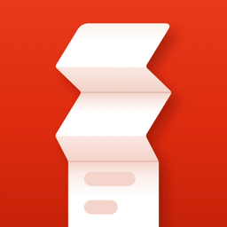

01無料
ページの最後まで、一度に。
URLを貼り付けるか、Safariの共有メニューからTongcapを開くだけ。長い記事やWebページを1枚の画像に保存できます。

Web ページ全体もトークも1枚に
残しておきたい記事も、長く続くトークも。Tongcapで1枚にまとめて、必要なところをすっきり共有しましょう。
iPhone · iOS 18以降 · 6言語に対応
01 / FEATURES
保存して、整えて、共有する。何枚ものスクショを並べなくても、流れをそのまま残せます。
URLを貼り付けるか、Safariの共有メニューからTongcapを開くだけ。長い記事やWebページを1枚の画像に保存できます。
トークやアプリをスクロールしながら画面収録し、動画を読み込みます。重なった部分をつなぎ合わせ、1枚の画像にまとめます。
上下をトリミングし、検出された顔や電話番号などをモザイクで隠せます。共有する前に、必ず仕上がりを確認してください。
矢印・ペン・蛍光ペン・四角形で書き込み。長さに応じて最大30枚に分割できます。PNG・JPEG・PDFへの保存は無料です。
02 / HOW IT WORKS
保存したいWebページのURLをコピーします。
URLを貼り付けてキャプチャ。ログインが必要なページは、先にアプリ内でログインしてください。
トリミングとモザイクを確認し、使いたい形式で書き出します。
03 / MAKE IT YOURS
毎日のWebキャプチャに必要な機能を。
スクロール動画や、より細かな編集に。
Pro機能は3回無料で試せます。新しいProの結果を初めて書き出すと1回分を使用します。同じ結果を保存し直しても回数は減りません。価格はアプリ内でご確認ください。
04 / GOOD TO KNOW
いいえ。iPhoneのコントロールセンターで画面収録した後、選んだ動画をTongcapに読み込みます。画面収録のつなぎ合わせはPro機能です。
サイトの構造によって結果が異なります。折りたたまれた内容は先に展開してください。無限に続くフィードや、独立したスクロール領域は一部が欠ける場合があります。
キャプチャ・つなぎ合わせ・モザイク処理は端末内で行われ、キャプチャ画像を開発者のサーバーに送信しません。その他のデータの取り扱いはプライバシーポリシーをご確認ください。
LET’S TALK
使い方の質問や、こうなったらいいなというアイデアをお聞かせください。